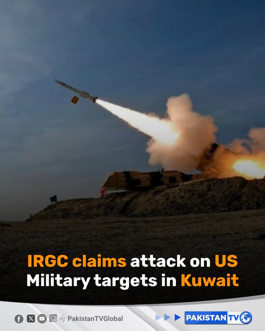
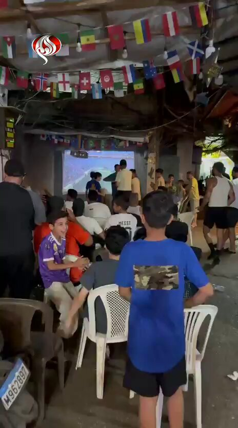
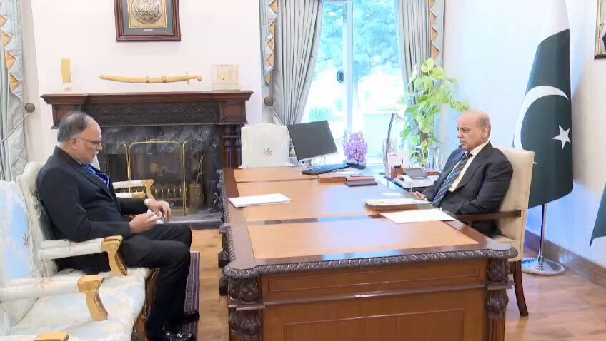
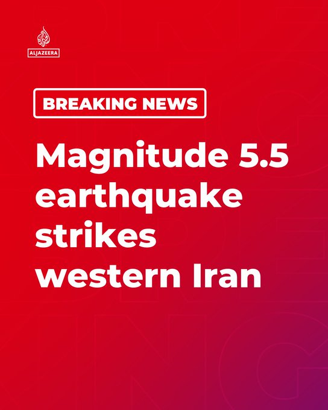
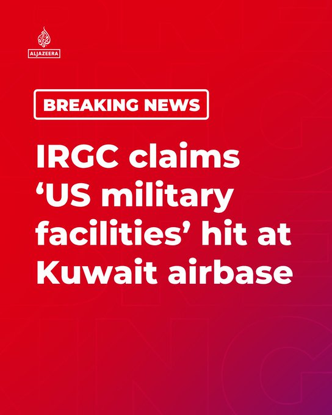
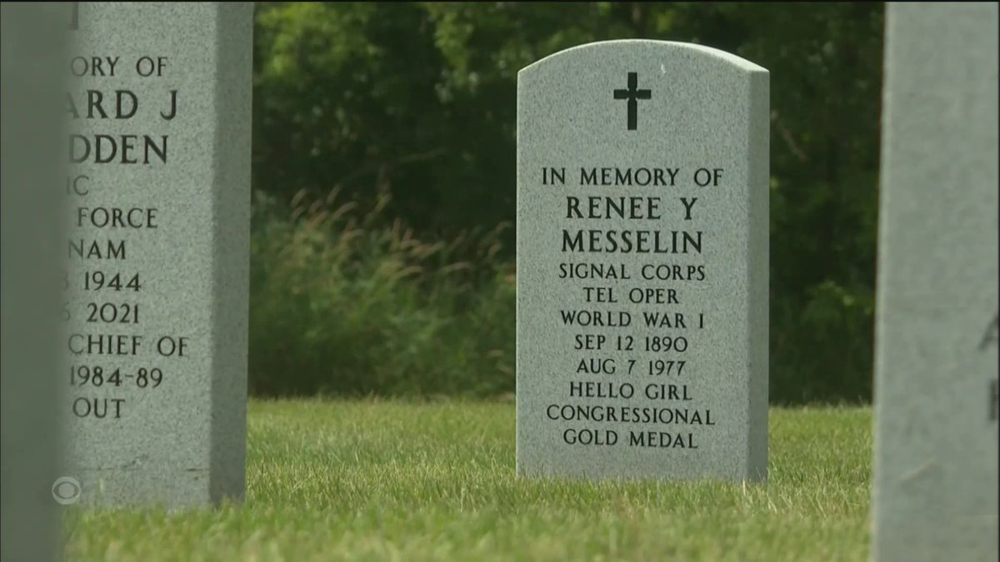
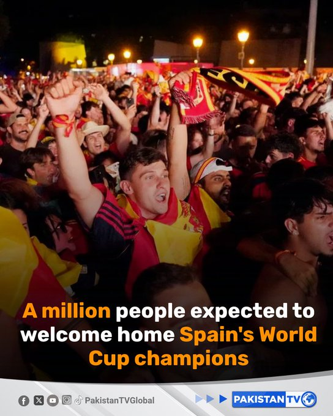
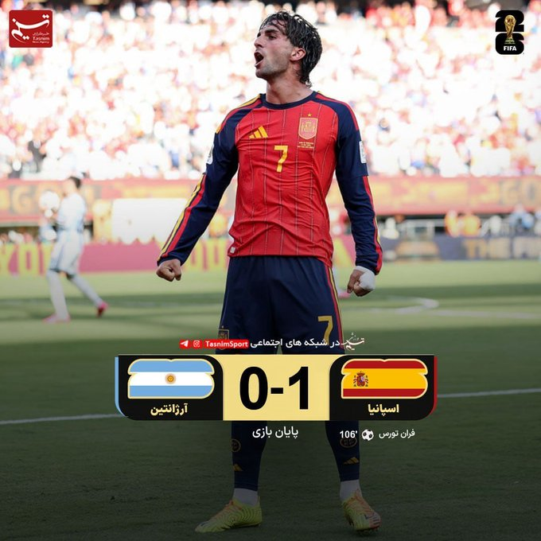
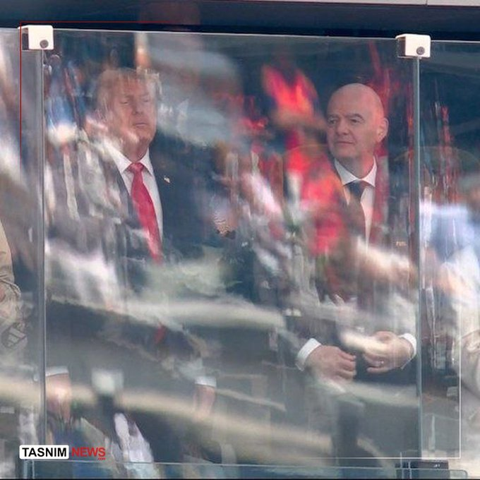
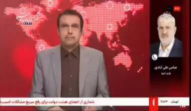

@Tasnimnews_Fa
📝 原文: Martyr Haj Hassan Tehrani-Moghaddam: I would thank God to serve Seyed Majid Mousavi...
🇨🇳 译文: 烈士哈吉·哈桑·德赫拉尼·莫加达姆：我感谢上帝为赛义德·马吉德·穆萨维服务......

🕒 2026-07-20T06:06:50+00:00
| 来源 | 旧窗口内数量 | 本次新增 | 本次淘汰 | 当前窗口内共有 |
|---|---|---|---|---|
| 推文 + Dawn 新闻 | 0 | 54 | 0 | 54 |
| ARY News | 0 | 0 | 0 | 0 |
注：淘汰数 = 旧窗口内数量 + 本次新增 - 当前窗口内共有
























暂无文章。